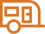
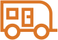
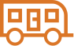

Each loop is slow, small and quiet, so the page still feels calm. Pick one letter per row (or say "none"). Nothing here is in the configurator yet. With "Reduce motion" switched on in a phone's settings, none of it plays.
Step 1 · the two choices
ABreathehalves swell, one then the other
BIcon bobthe people lift gently
CShimmera soft light sweep
Step 2 · the size icons
AFloatrise and fall, out of step



BRinga faint ring spreads and fades
CTiltthe caravan gives a small wiggle
The Next arrow · Steps 1 to 3
Shown from the start. Before a choice is made it sits faded; once chosen it is solid and plays the cue.
ANudgethe arrow slides forward and back
before a choice
after a choice
BRinga faint ring pulses out
before a choice
after a choice
Step 6 · the chat answers
AGlowthe outline breathes
No, just email me a quoteYes, let’s keep customising
BShimmera pale sweep across each
No, just email me a quoteYes, let’s keep customising
CHopa small lift, one after the other
No, just email me a quoteYes, let’s keep customising
Step 6 · the van picture, changing every 2 seconds
Cycles through the picture of the chosen model, the chosen bed and the chosen floorplan (here: Amaroo, king bed, 17′09″ plan).